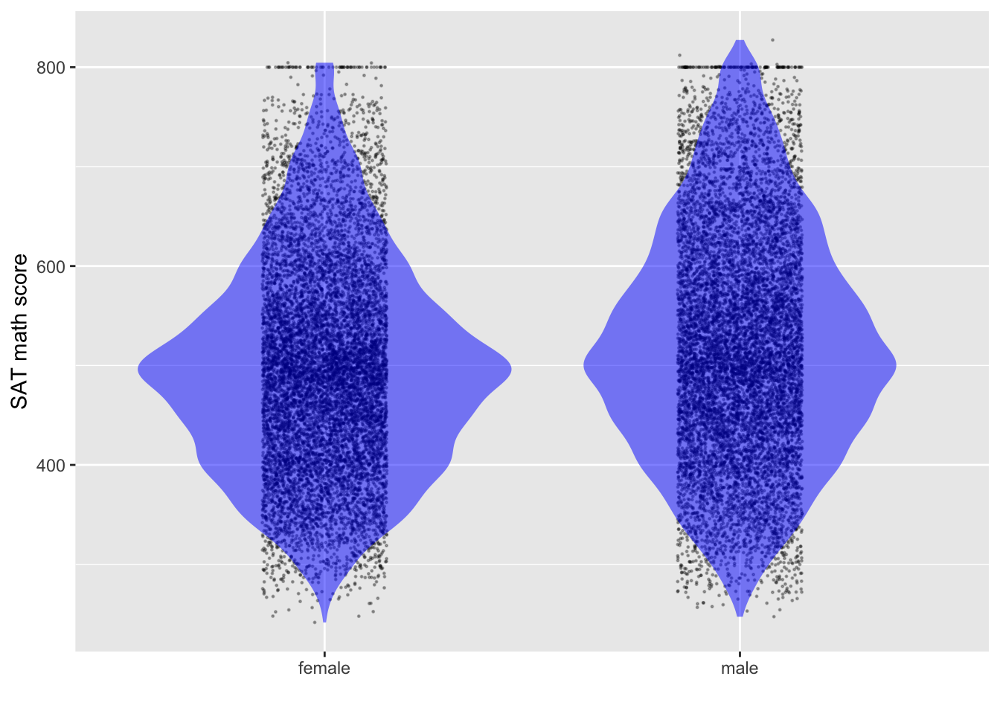

remotes::install_github("dtkaplan/math300")Instructor Teaching Notes for Lesson 25
Math300Z
Preliminaries
- Update your version of the
{math300}package.
Now you can get_teaching_notes(24) to get the sources for the teaching notes. Here you can see all the code in an executable format. BUT … often the code goes well beyond the programming expected for Math 300 students. An example is below, where I use information published by the College Board to reconstruct/simulate SAT scores for individuals.
- I made a mistake in calculating the regression using Excel. It’s easy to make such mistakes. But if I had done things correctly, Excel would have given the right answer.
# Reconstructing the math scores from College Board percentile data
# Math 300Z students are NOT expected to understand this code
Math_scores <- tibble::tribble(
~ female, ~ male, ~score,
99.5, 99, 800,
98, 95, 750,
94, 90, 700,
88, 81, 650,
79, 71, 600,
65, 56, 550,
43, 37, 500,
27, 23, 450,
13, 12, 400,
4, 4, 350,
1, 1, 300,
0, 0, 250,
) %>%
mutate(fweights = -diff(c(100, female))) %>%
mutate(mweights = -diff(c(100, male)))
N = 10000
Females <- Math_scores[-nrow(Math_scores),] %>%
dplyr::select(-male) %>%
sample_n(size = N, weight = fweights, replace = TRUE) %>% dplyr::select(score) %>% mutate(sex = "female")
Males <- Math_scores[-nrow(Math_scores), ] %>%
dplyr::select(-female) %>%
sample_n(size = N, weight = mweights, replace = TRUE) %>% dplyr::select(score) %>% mutate(sex = "male")
Math_scores <- rbind(Females, Males) %>%
mutate(score = ifelse(score == 800, 800,
score - #runif(nrow(.), min = 0, max = 49) +
rnorm(nrow(.), sd = 20)))Prediction
Confidence intervals are impressive because we have poor intuition about the effects of averaging. (For instance, the \(1/\sqrt{n}\) width of confidence intervals is not obvious.)
mod <- lm(height ~ mother*sex, data=Galton)
model_plot(mod, interval="confidence") +
facet_wrap(~ sex)
Prediction intervals are unimpressive because it’s easy for us to draw the boundaries of the raw data.
model_plot(mod, interval="prediction") +
facet_wrap(~ sex)
The reasons it’s worthwhile to study prediction are:
- To know when to use prediction and when to use estimation of effect size.
- To know the proper form of a prediction, which is not the same thing as the proper form of a confidence interval.
- Prediction: List the possible outcomes, assign a probability (or prob. density, i.e. a relative probability) to each possible outcome.
- To understand when it’s important to predict extremes rather than “central” values.
- As a case study in updating probabilities as new information comes in.
- March Madness brackets.
Case study: Test scores
There are certain tasks where a confidence interval is appropriate and others where it is utterly misleading. It’s important to distinguish between the two.
Here’s an example: a headline about SAT scores:
“2016 SAT test results confirm pattern that’s persisted for 50 years — high school boys are better at math than girls”— source
This is the graph supporting the claim:
Using the simulated data, we can get a confidence interval on the difference between scores for females and males.
What does the above graph show?
- Why do the lines follow the same up-and-down path? Is this random variation?
- What covariates might be at work here?
- Who takes math in high-school
- fewer boys took low-level math at any time, more boys take physics
- Number taking the exam? about 91M/100F
- “Natural sex ratio” is about 105 M / 100 F. in US Ratio of fraction of population taking the SAT 87 M/100 F.
- Who takes math in high-school
Estimating the confidence interval on the means

- Find the center of the distribution.
- Find an interval that includes “almost all” of the data: about 95%.
- Find an interval that includes about 2/3 of the data: 66%.
- The data’s standard deviation, \(s\), will be somewhere in the range from
- one-half of (3)
- one-quarter of (2)
- The margin of error will be \(2 s/\sqrt{n}\). Here, \(n\) is roughly 1M.
- As always, the confidence interval will be “center \(\pm\) margin-of-error.”
As a computation, here it is for sample size \(n=20,000\).
lm(score ~ 1, data=Math_scores) |> conf_interval()# A tibble: 1 × 4
term .lwr .coef .upr
<chr> <dbl> <dbl> <dbl>
1 (Intercept) 508. 509. 511.The actual size of the data is about \(n=1,000,000\), 50 times greater. So the confidence interval on the mean of the actual data will be about 1/7 of the one in the calculation: 1.5/7 = 0.2.
We can also look at the confidence interval on the difference in scores between the sexes:
lm(score ~ sex, data=Math_scores) |> conf_interval()# A tibble: 2 × 4
term .lwr .coef .upr
<chr> <dbl> <dbl> <dbl>
1 (Intercept) 495. 497. 500.
2 sexmale 20.1 23.2 26.3With the full data set, the margin of error is 3/7 = 0.4.
Explaining the difference?
Looking at average SAT from state to state as a function of expenditures and fraction.
sat_model <- lm(math ~ frac + expend, data = SAT)
model_plot(sat_model)conf_interval(sat_model)# A tibble: 3 × 4
term .lwr .coef .upr
<chr> <dbl> <dbl> <dbl>
1 (Intercept) 493. 518. 543.
2 frac -1.78 -1.53 -1.29
3 expend 2.71 7.54 12.4 The standard deviation of SAT math scores across individuals is about 110 points. The numbers taking the test are so large (about 800,000 F, 700,000 M) that the standard error for each group is \[\frac{110}{\sqrt{750,000}} = 0.13\ \text{points}\]
The issue I want to focus on, ignoring the covariates, is the extent to which you can figure out a student’s math aptitude by knowing the student’s sex.
Given a female, what’s the predicted test score? For a male?
How do you describe a prediction.
- Ideally: as a probability for each possible outcome: a probability distribution.
- Horribly: as the mean.
- Conventionally: as an interval.
Prediction interval
Formally …
lm(score ~ sex, data=Math_scores) |>
model_eval(skeleton = TRUE, interval="prediction") sex .output .lwr .upr
1 female 497.4977 277.6429 717.3525
2 male 520.7302 300.8755 740.5850Informally … Cover almost all (say, 95%) of the data.
Assigning a probability
An interval is a convenient summary of a prediction. In the next class, we’ll see how to approximately translate an interval into a probability distribution.
Orings <- Sleuth3::ex2011
Orings <- Orings %>% mutate(fail = zero_one(Failure, one="Yes"))
mod_oring <- glm(fail ~ Temperature, data=Orings, family="binomial")
model_plot(mod_oring)model_eval(mod_oring, Temperature=28, interval="confidence", level=.95) Temperature .output .lwr .upr
1 28 0.9977133 0.3653965 0.999997Converting to an interval
Watch out for the extremes
In designing infrastructure, it doesn’t matter so much what is the 97.5% max wind velocity per day. What matters is the 99.995% velocity: the biggest in, say, 50 years.
Review of Lesson 24
THIS IS VERY DRAFTY.
In the last lesson, we considered effect size, a way to summarize a model to indicate the strength and direction of the influence of an explanatory variable with respect to a response variable. (As always, sample statistics such as the effect size are according to the model. A different model may give you different results, so the choice of model specification is important and should be carefully considered.)
Here’s a possible DAG for the height of a child.
height_dag <- dag_make(
mother_genetics ~ exo(),
father_genetics ~ exo(),
exo_dad ~ exo(),
exo_mom ~ exo(),
mother_height ~ mother_genetics + exo_mom + exo(),
father_height ~ father_genetics + exo_dad + exo(),
health ~ exo(),
nutrition ~ exo(),
child_sex ~ exo(),
child_height ~ mother_genetics + father_genetics + child_sex + nutrition + health + exo()
)
set.seed(106); dag_draw(height_dag, vertex.size = 13,
vertex.label.cex=0.75,
edge.arrow.size=.25 )We talk casually about the effect size of child’s height with respect to mother’s height, but there is no causal flow between mother’s height and child’s height. What we mean is the effect of a change in the mother’s genetics that leads to a 1 inch change in mother’s height and a corresponding change in child’s height.
The concept of an effect size is that all the other nodes are held constant when we change the mother’s genetics, including health, nutrition, sex, and father’s genetics.
There’s no way to do this; there aren’t two identical mothers to compare who differ only in their height-related genetics and can produce children who have exactly the same father’s genetics.
Instead, what we think about is comparing two children from two similar mothers (differing only in height genetics) with similar father genetic contribution, nutrition, health, ….
The model specification height ~ mother + father + sex does this comparison of similars in a mathematical way. But the model output is not the only thing that changes when we generate this mathematical child’s height from two different height mothers.
The residuals from the model indicate the magnitude of all the other influences that we haven’t been able to hold constant.
height_mod <- lm(height ~ mother + father + sex, data=Galton)
Values <- model_eval(height_mod)Using training data as input to model_eval().ggplot(Values, aes(x=mother, y=.resid)) + geom_jitter(alpha=0.5)Is there any clear pattern to the residuals?
If we were making a prediction of a daughter’s height, should we just look at the model value based on the parents’ heights, or should we take into account the residuals.
Proper form for a prediction
Assign a probability to every possible outcome.
ggplot(Values, aes(x=" ", y=.resid)) + geom_violin(alpha=0.4, fill="blue") +
geom_jitter(alpha=0.2, width=.15) + xlab("Residual") + ylab("") +
geom_hline(yintercept=c(-4.13, 4.04), color="red", alpha=0.5)Values |> summarize(m = mean(.resid), sd=sd(.resid),
q2.5=quantile(.resid, 0.025),
q97.5 = quantile(.resid, 0.975)) m sd q2.5 q97.5
1 -2.882542e-14 2.150721 -4.129319 4.043707Realistic predictions
Precipitation runoff: It rains. Some of the water is absorbed, some runs off and ends up in a nearby river. The runoff is measured as the depth of water over the entire catchment basin that ends up in the river. Give a forecast of a storm, we might want to know if a flood is likely.
Data for the Monocacy River in Maryland, close to where I grew up.
RESULT FOR THE BIGGEST RAINFALL DEPENDS ON how logarithms are used.
ggplot(Monocacy_river |> filter(precip > 2), aes(x=log(precip), y=log(runoff))) +
geom_point() +
geom_lm(interval="prediction") +
geom_lm(interval="confidence", fill="blue") # +Warning: Using the `size` aesthietic with geom_ribbon was deprecated in ggplot2 3.4.0.
ℹ Please use the `linewidth` aesthetic instead.Warning: Using the `size` aesthietic with geom_line was deprecated in ggplot2 3.4.0.
ℹ Please use the `linewidth` aesthetic instead. # geom_abline(slope=1.08, intercept=-1.07)